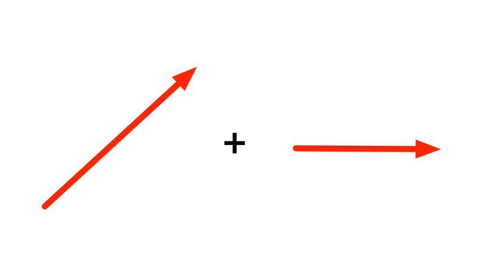
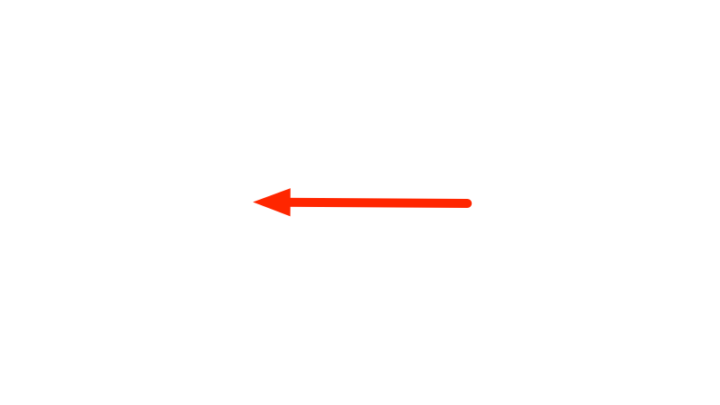
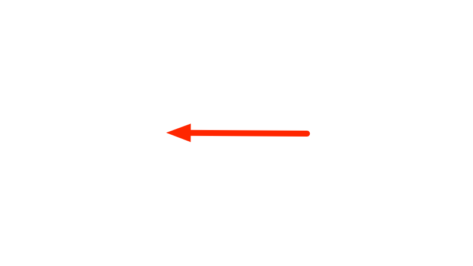
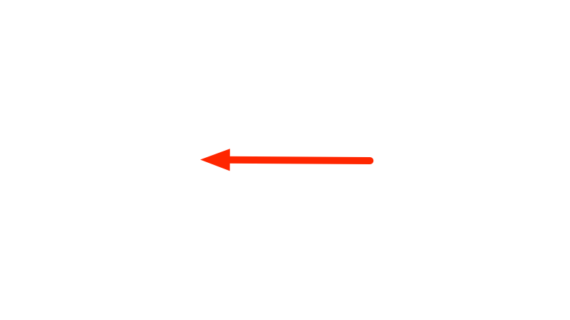

I - Vectors and Tensors
Why, in software, arrays with multiple
integer indices came to be called tensors.
Linear Algebra for Machine Learning
Tai-Danae, Mesch
X/Google, 2021
Intro: Tensors!
The ML library we all use is called
Tensorflow, after those things from Linear Algebra. But
what are Tensors really?
Important, is what they are!
- In General Relativity, tensors describe Gravitation.
- In Quantum Mechanics, multi-particle states are the tensor products of single particle states.
- In Quantum Computing, each qubit is one factor of a tensor product.
- In Machine Learning ... well, those "tensors" in Tensorflow are just superficially connected with what they are in Mathematics -- we'll explain how exactly! -- but tensor products appear in the interesting places when optimizing weight matrices in large models.
Remember to look at the notes.
Game Plan
Throughout the next 3 sessions:
- We explain what tensors are, and how they come to be associated with multidimensional array data structures in software engineering, especially in machine learning.
- We contemplate how tensor products of vector spaces have a peculiar scaling behavior in their dimension: Unlike the Cartesian Product, which adds the dimensions of its factors, the Tensor Product multiplies. We also contemplate how confusing it is that $2+2=2*2=2^2$.
- We finally look how tensors and their products appear in machine learning models.
Meta
Besides the improved understanding of ML and QC, there are a few
tangential motivations that are inspiring in their own right, or for
building software:
- Introduce axiomatic construction.
- Look at Notation.
- Learn the same thing againi from a different perspective. (Remember the Tensorflow code retreat.)
- Introduce some mathematical concepts, such as Isomorphism and Duality.
Vectors and Tensors - Overview
Plan for today.
- Recap Axioms of Vector Space
- Einstein Notation
- Linear Independence gives rise to Basis and Coordinates
- Basis and Coordinate Transformations
- The Scalar Product $\leftarrow$ This is the first Tensor!
- Tensor Coordinates and Basis Transformations
Axioms of Vector Space
Recap what Vectors are, and Vector Spaces.
- Vectors can be added to each other and multiplied with scalar numbers.
- Scalar numbers are elements of a Field, usually Rational Numbers, Real Numbers, or Complex Numbers, but also finite fields, notably the Galois Field.
Axioms of Vector Space
Everything that follows these axioms, is a vector space:
- Associative: $(\vec{a} + \vec{b}) + \vec{c} = \vec{a} + (\vec{b} + \vec{c})$
- Commutative: $\vec{a} + \vec{b} = \vec{b} + \vec{a}$
- Neutral Element: $\exists \vec{0} \; \forall \vec{a} : \vec{a} + \vec{0} = \vec{a}$
- Inverse Element: $\forall \vec{a} \; \exists -\!\vec{a} : \vec{a} + (-\vec{a}) = \vec{0}$
- Scalar mult compatible with Field mult: $a \cdot (b \cdot \vec{a}) = (a \cdot b) \cdot \vec{a}$
- Neutral Element of scalar mult: $1 \cdot \vec{a} = \vec{a}$
- Distributive over vector add: $a \cdot \vec{a} + a \cdot \vec{b} = a \cdot (\vec{a} + \vec{b})$
- Distributive over scalar add: $a \cdot \vec{a} + b \cdot \vec{a} = (a + b) \cdot \vec{a}$
- $\forall$ is implied where absent in the axioms.
Axioms of Vector Space - Examples
Two examples of what vector spaces are.
- Example 1: Arrows over Rational Numbers.
- Example 2: Tuples of Real Numbers over Real Numbers.
Axioms of Vector Space - Example: Arrows
Arrows in the 2D plane are vectors, with their operations defined
by Euclidean Geometry.

 




Axioms of Vector Space
Exercise: Are these two examples vector spaces?
- (a) Tuples of Real Numbers over Rational Numbers?
- (b) Tuples of Rational Numbers over Real Numbers?
Linear Independence
The existence of coordinates follows directly from the
axioms.
- This derivation leads to the introduction of coordinates.
- It follows directly form the algebraic structure introduced by the axioms.
- Vectors can be linearly combined: $$\sum_{i} w_i \cdot \vec{v}_i$$
- Can such combinations yield $\vec{0}$ with coefficients that are not all $0$? (It's always possible with all coefficients 0, of course.)
- Vectors in the combination are then said to be linearly dependent.
- Otherwise they are linearly indedendent.
- Exercise: Imagine sets of arrows that are
- (a) linearly dependent,
- (b) linearly independent.
Einstein Notation
We introduce a notation for vector algebra that's very neat.
- Convention: $$w^i \vec{v}_i := \sum_{i} w_i \cdot \vec{v}_i$$
- If an index $i$ appears in a multiplication expression both as upper index $w^i$ and as lower index $\vec{v}_i$, then the sum over the range of the index is implied.
- Also for multiple indices. (Will see this for tensors.)
Einstein Notation
- No sum for an index on its own: $$\vec{v}_i$$ is simply a tuple of vectors.
- No sum for a repeated index on top or bottom: $$M_{ii}$$ is the tuple of the diagonal elements of the matrix $M_{ij}$.
Linear Independence
More analysis yields interesting properties of linear independence.
- In each vector space, the maximum number of elements $\vec{e}_i$ in a set of linearly independent vectors is fixed.
- For every other vector $\vec{v}$ added to such a set, there is a linear combination that yields $\vec{0}$: $$v^{i}\vec{e}_{i} + v^{0}\vec{v} = \vec{0}$$
- Another way of saying this is that $\vec{v}$ can be combined from $\vec{e}_{i}$. With the same coefficients as above, and noticing that $v^{0}$ cannot be $0$: $$\vec{v} = - \frac{v^{i}}{v^0} \vec{e}_{i}$$ (Einstein notation applies.)
- Exercise: (a) why must be $v^{0} \neq 0$? (b) Why would it be a problem otherwise?
Linear Independence
One more property, and it all yields 3 important concepts.
- Write more simply; $$\vec{v} = v^{i} \vec{e}_{i}$$
- Are these coefficients unique?
- It turns out yes they are!
- Proof follows, to show how such things work ...
Linear Independence
Proof that the coefficients of any vector are unambiguous.
- Assume there are two such sets of coefficients: $$\vec{v} = v^{i} \vec{e}_{i} = u^{i} \vec{e}_{i}$$
- subtract one from the other: $$\vec{v} - \vec{v} = v^{i} \vec{e}_{i} - u^{i} \vec{e}_{i}$$ $$\vec{0} = (v^{i} - u^{i}) \cdot \vec{e}_{i}$$
- Now remember that $\vec{e}_i$ are linearly independent and that means $\vec{0}$ can be combined only with all coefficients $0$.
Linear Independence
- Thus for all $i$: $$v^{i} - u^{i} = 0$$ (No Einstein sum here, because the index is up both times.)
- Or: $$v^{i} = u^{i}$$ QED.
- Thus, every vector in the vector space can be represented as a combination with unambiguous coefficients from any maximal set of lineary independent vectors.
Dimension, Basis, and Coordinates
From the concept of Linear Indepdendece, we arrive
at 3 Definitions:
- The number of elements in a maximal set of linearly independent vectors of a vector space is called Dimension of that vector space.
- Any such set itself is called a Basis of that vector space.
- The coefficients in the linear combination of the basis vectors that yields a vector are called the Coordinates of the vector in that basis.
Coordinate Tuples vs $F^n$ Vectors
- Once a basis is picked, every vector is represented by a tuple of coordinates.
- The tuples are elements of $F^n$, the cartesian product space of the scalar field.
- The field $F$ by its own axioms has addition and multiplication defined. The cartesian product naturally has addition and scalar multiplication — $F^n$ is a vector space too!
- This vector space is isomorphic to the original vector space, which often misleads us to think that vectors just are tuples of numbers.
- The mapping of the vectors to its coordinate tuples is called an Isomorphism. There are many such mappings, one for each basis of the vector space.
- Exercise: Define two different bases in $R^2$, and compute the coordinates of one vector in both bases.
Basis Transformation
Let's consider two different Bases $\{\vec{e}_{i}\}$ and
$\{\vec{e}_{i^\prime}\}$.
- Notation: Symbols with differently primed index symbols refer to different objects. Thus $\vec{e}_{i}$ is a different vector from $\vec{e}_{i^\prime}$ even for equal values of $i$ and $i^\prime$.
- All vectors of the vector space have coordinates with regard to the first base as well as with regard to the second base: $$\vec{v} = v^{i} \vec{e}_{i} = v^{i^\prime} \vec{e}_{i^\prime}$$
- All vectors of the second basis have coordinates with regard to the first base. Let's call $T_{i^\prime}^{i}$ the coordinates of $\vec{e}_{i^\prime}$ in the basis ${\vec{i}_{i}}$: $$\vec{e}_{i^\prime} = T_{i^\prime}^{i} \vec{e}_{i}$$
- Notation: We could write $T$ as a matrix. But we don't, and stick to Einstein notation instead. We'll see later why.
Basis Transformation
- All vectors of the first basis $\{\vec{e}_{i}\}$ have coordinates with regard to the second basis and $\{\vec{e}_{i^\prime}\}$ just like every vector: $$\vec{e}_{i} = T_{i}^{i^\prime} \vec{e}_{i^\prime}$$
- Notation: the indices on $T_{i}^{i^\prime}$ and $T_{i^\prime}^{i}$ are different, so the note from the previous slide applies.
Basis Transformation
- So the two $T$ are different, but they are related, as we see from inserting one in the other: $$\vec{e}_{i} = T_{i}^{i^\prime} \vec{e}_{i^\prime}$$ $$\vec{e}_{i} = T_{i}^{i^\prime} T_{i^\prime}^{j} \vec{e}_{j}$$
- thus: $$T_{i}^{i^\prime} T_{i^\prime}^{j} = \delta_{i}^{j} \;\;\mathrm{where}\;\; \delta_{i}^{j} = 1 \; (i=j), \; 0 \; (i \neq j)$$
- The two matrices $T_{i}^{i^\prime}$ and $T_{i^\prime}^{j}$ are each other's inverse.
- Notation: we don't have to care about transpose or ordering of factors.
Basis Transformation
- We can ask for the relationship of the coordinates of a vector too: $$\vec{v} = v^{i} \vec{e}_{i} = v^{i^\prime} \vec{e}_{i^\prime}$$ $$\vec{v} = v^{i} \vec{e}_{i} = v^{i^\prime} T_{i^\prime}^{i} \vec{e}_{i}$$
- thus: $$v^{i} = T_{i^\prime}^{i} v^{i^\prime} \;\; \mathrm{and\;remember} \;\;\ \vec{e}_{i} = T_{i}^{i^\prime} \vec{e}_{i^\prime}$$
- ... basis vector and coordinates transform inverse (and transposed) to each other.
- Notation: again ordering of factors is not important for meaning, unlike in matrix notation.
Basis Transformation
- Definition: $T$ is called a basis transformation, and correspondingly a coordinate transformation.
- Exercise: Write down the basis transformation and the coordinate transformation for a rotation of 90 degrees clockwise in space of arrows in the 2D plane.
Scalar Product and Metric Tensor
Let's look at the scalar product in Vector Spaces.
- The scalar product is a map from the vector space to its scalar field: $$\vec{v} \cdot \vec{w} = a \in F$$
- linear: $$(a \vec{v}) \cdot \vec{w} = a (\vec{v} \cdot \vec{w})$$ $$(\vec{v} + \vec{u}) \cdot \vec{w} = \vec{v} \cdot \vec{w} + \vec{u} \cdot \vec{w}$$
- commutative: $\vec{v} \cdot \vec{w} = (\vec{w} \cdot \vec{v})$
- regular: $\forall \vec{v} \neq \vec{0} \; \exists \vec{w}: \vec{v} \cdot \vec{w} \neq 0$
Scalar Product and Metric Tensor
We are on the way to define the first tensor.
- The vectors can be written with coordinates in a basis: $$\vec{v} \cdot \vec{w} = (v^{i}\vec{e}_{i}) \cdot (w^{j} \vec{e}_{j})$$
- ... using the linearity of the scalar product yields: $$\vec{v} \cdot \vec{w} = v^{i} w^{j} (\vec{e}_{i} \cdot \vec{e}_{j})$$
- The scalar products of the basis vectors are just numbers. We call them $g$: $$g_{ij} := \vec{e}_{i} \cdot \vec{e}_{j}$$
- ... then: $$\vec{v} \cdot \vec{w} = v^{i} w^{j} g_{ij}$$
Scalar Product and Metric Tensor
- For a given basis, these numbers $g_{ij}$ fully define the scalar product in the vector space; they are the coordinates of the bilinear map that is the scalar product.
- We call them coordinates because they work like coordinates of vectors: The object they describe is not those numbers, it's a map of vectors to scalar numbers, just like the vectors are not their coordinates. But once vectors are described by coordinates relative to a basis, the map is described by coordinates too
- Exercise: Write down the coordinates of the scalar product for arrows in 2D space in a basis of your choice.
Scalar Product and Metric Tensor
Two interesting questions arise, both of which lead to the definition of tensors:
- (1) What are the coordinates of the scalar product in another basis?
- (2) What are the "basis vectors" of whom the coordinates are the coefficients?
Exercise: Discuss the questions above.
Scalar Product and Metric Tensor
What are the coordinates of the scalar product in another
basis? Lets see ...
- $\vec{v} \cdot \vec{w} = (v^{i}\vec{e}_{i}) \cdot (w^{j} \vec{e}_{j})$
- $\vec{v} \cdot \vec{w} = (v^{i^\prime}\vec{e}_{i^\prime}) \cdot (w^{j^\prime} \vec{e}_{j^\prime})$
- $\vec{v} \cdot \vec{w} = (v^{i^\prime} T_{i^\prime}^{i} \vec{e}_{i}) \cdot (w^{j^\prime} T_{j^\prime}^{j} \vec{e}_{j})$
- $\vec{v} \cdot \vec{w} = v^{i^\prime} w^{j^\prime} \; T_{i^\prime}^{i} T_{j^\prime}^{j} \; (\vec{e}_{i} \cdot \vec{e}_{j})$
- $\vec{v} \cdot \vec{w} = v^{i^\prime} w^{j^\prime} \; T_{i^\prime}^{i} T_{j^\prime}^{j} \; g_{ij}$
- $\vec{v} \cdot \vec{w} = v^{i^\prime} w^{j^\prime} \; g_{i^{\prime}j^{\prime}}$
- thus, $g_{i^{\prime}j^{\prime}} = T_{i^\prime}^{i} T_{j^\prime}^{j} \; g_{ij}$
Tensors
We can now give a definition of a Tensor, and of the Tensor
Product Space.
- A Tensor is any mathematical object in a vector space with coordinates that transform under basis transformations like a multilinear map.
- The scalar product is just one such map. There are many others.
- They can even be combined, e.g.: $$(g + h)(\vec{a}, \vec{b}) := g(\vec{a}, \vec{b}) + h(\vec{a}, \vec{b})$$ $$(ag)(\vec{a}, \vec{b}) := a \cdot g(\vec{a}, \vec{b})$$
- Looking closely, they form a vector space too!
- The Tensor Product Space of $V$ is the vector space comprised of tensors in $V$: $$g,h \in V \otimes V$$
Scalar Product and Metric Tensor
Now that we have defined Tensors, a few more Definitions.
- A vector space with a scalar product is a Euclidean Vector Space.
- Two vectors from a Euclidean Vector Space whose scalar product is $0$ are Orthogonal.
- If the scalar product is positive definite (not always the case), then he scalar product also gives rise to a Norm: $$|\vec{x}| = \sqrt{\vec{x} \cdot \vec{x}}$$
- The Angle $\phi$ between two vectors $\vec{x}$ and $\vec{y}$ is defined by $$\cos \phi = \frac{\vec{x} \cdot \vec{y}}{\sqrt{\vec{x} \cdot \vec{x}} \sqrt{\vec{y} \cdot \vec{y}}}$$
Scalar Product and Metric Tensor
- Because the scalar product defines both distance and direction in a Euclidean Vector Space, i.e. the Metric, and is a tensor, it's called the Metric Tensor.
- In Riemann Geometry, the metric tensor is in every point in space (i.e. it's a tensor field). In General Relativity, the metric tensor is connected to the mass by a partial differential equation.
Higher Order Tensors
- Tensor Product Spaces of $V$ arise from multilinear maps in the same way, e.g.: $$V \otimes V \otimes V \otimes V$$
- Such tensors have coordinates with as many indices: $$g_{ijkl}$$
- that transform under a basis transformation: $$g_{i^{\prime}j^{\prime}k^{\prime}l^{\prime}} = T_{i^\prime}^{i} T_{j^\prime}^{j} T_{k^\prime}^{k} T_{l^\prime}^{l} g_{ijkl}$$
- Natural question: What's the dimension of that space, and what is its basis?
Tensor Bases
We answer the second of those questions first, and the
first in the next session ...
- Given a basis in $V$, we define a basis in $V \otimes V$ as follows: $${\vec{e}^i \otimes \vec{e}^j}$$
- is the bilinear function of two vectors from $V$ such that $$(\vec{e}^i \otimes \vec{e}^j)(\vec{e}_k, \vec{e}_l) = \delta^i_k \delta^j_l$$
- then a bilinear map $g$ with coordinates $g_{ij}$ is given by $$g = g_{ij} \, \vec{e}^i \otimes \vec{e}^j$$
Tensor Bases
- $g(\vec{x}, \vec{y}) = g_{ij} (\vec{e}^i \otimes \vec{e}^j)(x^k \vec{e}_k, y^l \vec{e}_l)$
- $g(\vec{x}, \vec{y}) = g_{ij} x^k y^l (\vec{e}^i \otimes \vec{e}^j)(\vec{e}_k, \vec{e}_l)$
- $g(\vec{x}, \vec{y}) = g_{ij} x^k y^l \delta^i_k \delta^j_l$
- $g(\vec{x}, \vec{y}) = g_{ij} x^i y^j$
- as we said earlier.
Conclusion
- Vectors can be added and multiplied.
- From that follows they have coordinates wrt a basis.
- Tensors are multilinear functions of vectors.
- They are themselves vectors (can be added and multiplied), and thus have coordinates wrt a basis.
- The basis and coordinates of the tensors are related to the basis of and coordinates of the vectors they are functions of.
Next
- We look at the dimension of tensor product spaces, and how tensor products appear in Quantum Computing, but also in data structures in Software Engineering.